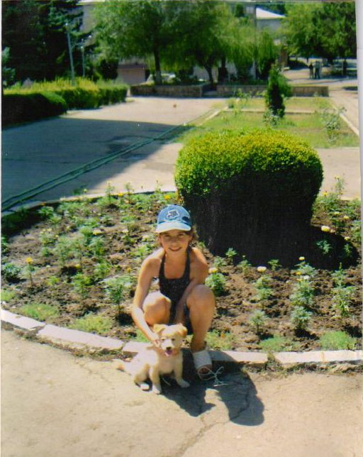

“Ухт” в августе
(посвящается Грайру Багдасаряну)
На прошлой неделе Ник Вагнер позвонил из Еревана и сказал, что хоть он и знает, что пришло время моего ежегодного похода в горы, но нельзя ли нам повидаться на денёк.
Я ответил, что я – не гора и могу reschedule my movements.
Наверно, эти приезды в Степанакерт вошли в его жизненный цикл, как и две его ежегодные побывки в семье дочери Мишель в штате Теннесси.
По ходу гостевания в столице НКР он зашёл в “Демо” предложить свои ребусы для газеты и не менее получаса делал мозги редактору Гегаму, а я тем временем сказал комплимент главбуху Свете и потом болтал на балконе с Наирой про еврейскую музыку и тягожильную прозу Платонова.
Потом к ней пришла посетительница и я спустился во двор под виноградную сень, где Эмка выпендривалась Пушком на бельевой верёвке.
Щенок, конечно, пожинал восторги и умиление всех приходящих, и только зав. русским сектором - Карина - умудрилась испугаться.
Но её идеосинкретические страхи не его вина – Пушок скорей оближет, чем укусит; а всё из-за Эмки – испортила пса, дав ему кошачье имя.
Потом Ник предложил сходить на базар, где он купил Пушку поводок-цепочку.
Попутно он всё строил прожекты, что “Демо”, для повышения тиража и читательских симпатий, могла бы устроить конкурс на самую симпатяшную собаку Степанакерта, а через месяц на самую уродину – почему бы нет?
Заокеанский Манилов.
Они тут перебиваются с жингалов-аца на мушкет, от благотворительных щедрот Би-би-си, работая по шаблонам “Правды” 1970-х, а он со своими собачьими выставками.
Впрочем, британцы могли бы и оценить такую инициативу потенциальных «бархатных революционеров».
На следующее утро я проводил Ника на конечную десятой маршрутки у роддома, а сам пошёл в Лисагор.
Ещё по весне, в какой-то из особенно муторных дней, я зашёл на кафедру географии АрГУ и заведущий - Юра Аракелян - объяснил мне по карте, как пройти на Кирс через Лисагор и Мусульманашен.
Пешехождение – отличное просветительное средство.
Теперь я знаю, что на шоссе между Шуши и Лисагором 5 родников-ахпюрей (2 из которых необустроенные), что из машин, следующих из Еревана, чаще выбрасывают на обочину пачки «Масис Табак», чем из едущих в противоположном направлении, а с пассажиров, едущих в Ереван, чаще сдувает головные уборы.
Уже под вечер у Лисагорского ахпюря я спросил местного павильонщика, какой дорогой пройти на Кирс.
- А ты кого там знаешь?
- А разве там кто-то живёт?
- Конечно. Вон иди по той, где мужик коров гонит.
Новость о заселении скальной гряды Кирс — 3-й по высоте горной вершины Карабаха, наблюдаемой в ясные дни из Степанакерта - привела меня в такое изумление, что я решил уточнить полученную информацию.
Чобан Вова поправил огромадные очки с круглыми стеклами и сказал, что идти надо именно этой дорогой и никуда не сворачивать, а в Кирсе передать от него привет старосте села Самвелу.
Тут только до меня дошло, что Мусульманашен переименован.
Вова поинтересовался, уж не на экскурсию ли иду и, получив утвердительный ответ, перешёл на русский, изумительно чисто выговорив:
- Ой, бл..ь!
Мат был и остается цементом в попытках превратить империю в единую нацию. На слух порой и не различишь, кто матерится - бурят или эстонец.
В Вовином исполнении звучали сочные отголоски одесского Привоза.
Ночь захватила меня на перевале и я распаковал спальный мешок.
В самый глухой час, когда полная луна всплыла в зенит в клочкастой пене облачков, меня пробудил собственный вскрик - от нестерпимо колющей боли над левой лопаткой.
Боль перебила сон и не стихала до утра, и даже завтрак перемежался моими крёхтами, взвывами и охами.
Правда, при ходьбе она отступала на задний план, но зато места привалов и скалы Кирса, куда я добрался, не спускаясь в долину, а по кряжу прилегающих тумбов, наслушались моих воплей благим матом – «ой!» да «ай!».
Больше некому было слушать – кругом безлюдье бугрящихся взгорий и только на западном горизонте - тающий в жарком мареве проблеск Шуши и ниточный пунктир шоссейных извивов.
Не знаю, на что смахивает Кирс с той стороны, где на нём установлен геодезический знак-треножник, но при подходе с запада Кирс явно женского пола – скалы складываются в титаническое изваяние распалённой грудастой бабени.
И тут в полный рост встала проблема воды. Мой кока-кольный контейнер на 2 литра был безнадежно пуст.
Надо доверять профессионалам!
Источник, обещанный Юрой Аракеляном, нашёлся метров на 80 ниже - на склоне, обращенном в долину села.
Потом я взобрался наверх, но не на самый вершок, где день-деньской палит солнце, а выбрал балкончик метров на 10 ниже, с возможностью укрываться в тени скалы на клочке горного разнотравья.
Полтора дня я отлеживался за весь год минувший с прошлого выхода на волю. Когда боль притуплялась – засыпал.
Во вторую ночь меня разбудило характерное потрескивание дождевых капель по синей мешковине, в которую я заворачивался вместе со спальным мешком.
Вода без проблем впитывалась нейлоном спального мешка и я понял, что дальше на горах мне не высидеть. Однако надо было ещё дождаться конца этой постылой ночи.
Поднявшийся к утру ветер не расчистил неба, а только перекачивал облака – в виде моросящего тумана – с одной стороны кирсовой гряды на другую.
Скрючившись на корточках под мокрым мешком, я сжевал завтрак и упаковался.
Хреновое это занятие – блуждать по скалам в тумане с видимостью в 3-6 метров, не зная, что встретишь за следующим валуном - провал, наполненый клубящимся сумраком тумана или монолитную стену - и придётся брести обратно по скользкой траве.
Хорошо хоть боль отступила – наверно струсила, сука.
Методом проб и ошибок удалось спуститься со скал и отыскать тропку к источнику ниже, где она потерялась в залитых дождём травах, но тут уже не надо было никуда карабкаться, а только идти вниз.
Поля шляпы вполне удачно облепляли уши, не пропуская шквалистый ветер и почти горизонтальные струи дождя.
И вот с очередного склона внизу увиделась лента грунтовой дороги.
Теперь – дойду!
Дождь прекратился, день посветлел.
Ходьба не давала замерзнуть в промокшей одежде. Я шёл, следуя бесконечным поворотам сельской дороги и готовил фразу, с которой обращусь к первому же человеку, встреченному в селе.
- Где дом старосты Самвела?
А потом попрошусь обогреться у его жестяной печки.
А село, даже и в ненастье, казалось райским уголком: величие пустынных склонов вокруг долины, мощный лес на ближайшем “тумбе”, речушка, бегущая через село, раздолье фруктового сада с обильным урожаем яблок.
Обогнув крайний, почти достроенный дом, я понял, что Самвела мне искать ни к чему – деловитый костёр из долгих жердей заготавливает жар для приготовления шашлыка, у входа стоит свежая «нива», белоокрашенная дверь превращена в стол, вокруг которого поставлены торчком белые строительные кубики для поддержки досок-скамеек.
Чиновная элита средней руки выехала на воскресный пикничок.
О, какое блаженство обсушиваться у костра вплоть до шнурков обуви; наблюдать, как исходит горячий пар от светлеющей ткани твоего спального мешка!
Потом, конечно, пригласили покушать, но пить я не стал – на дальних склонах маячил серпантин дороги к перевалу на Лисагор.
И снова – дорога, дорога без начала, без конца, и пейзажи осени в раю, и нытье ног, которые всё идут и идут, с самого рассвета, по камням, по травам, а теперь вот по дороге из тех же камней, но помельче.
Спустившись к Лисагору, я решил, что для одного дня с меня хватит полученной дозы активного отдыха и на ночёвку проник в незавершённое белокубичное строение неясного назначения – 3 на 5 метров, с 2-мя дверными проемами и 4-мя оконными – под откосом шоссе.
Зато вся эта незавершёнка покрыта бетонными настилами – хоть сверху не будет капать. Ночью я сделал открытие – чтобы не так больно было переворачиваться, надо ухватить голову рукой и поворачивать её одновременно с телом – главное, не спутать направление.
Утром позавтракал и нацепил на плечи скатку из синей мешковины – от моросящего дождя.
Теперь только выдержали бы ноги.
И они держались – несли меня и несли. Правда, после привалов почти что отказывались сгибаться, но через пару сотен шагов втягивались в своё дело и ступали по полосе белой краски, отведенной на шоссейном асфальте фирмой Ваге Карапетяна.
Глаза высматривали формы гранитных придорожных исполинов, а в голове проворачивалась обрывочная мешанина недодумываемых до конца мыслей —
...что Ашот, как и все оболтусы его возраста, тащится от Эминема, но все равно «Битлз» лучше, хоть я от них уже и не тащусь...
...что в английском языке можно выделить 5 видов существительных и сделать на эту тему интересную data base программку...
...что это Михаил Задорнов научил публику уму-разуму: хочешь пробиться в жизни – уважительней отзывайся про евреев...
...может, не такая уж и ахинея та сфабрикованная царской охранкой программа...
...это же так просто – заведи себе здоровую привычку везде и во всех обстоятельствах говорить приятные вещи про вышестоящего и когда-нибудь, где-нибудь, от кого-нибудь до него дойдет - и твоя карьера обеспечена...
...но мне не светит воспользоваться этим способом – в студенческие годы я побил еврейского юношу, который начал распространять похабные слухи про невинную девушку и мои с ней эксцессы, а пару недель спустя она мне сказала: «До чего же он верно предугадал, что мы будем так заниматься этим!»...
... потом его с папой выпустили в Израиль, но они так и не доехали, осев в Канаде, а она вышла за офицера, едущего служить в степях братской Монголии...
...в общем, поздно мне заниматься карьерой – мне б только с Unix’ом разобраться...
...столько этих языков развелось, а великий и могучий обмелевает иссякаючи: из огня калек вроде «имплементация узуса креативной активации превентирует пессимизирование менталитета», да в полымя приблатненного суржика типа «отрывайся по полной», вот и поди выбирай - что лучше...
...из радетелей и борцов за чистоту языка всего-то и остались, что Рафаэл Вартанович да русский отдел редакции “Демо”...
...если «кря» на армянском – «черепаха», значит «креативные игры» – «секс черепах»?..
...и как это римские легионеры ходили в походы в сандалиях на босу ногу?..
...вряд ли их старшина раздавал им носки китайского производства с надписью «нога – корень здоровья»...
...и всё-таки скульптуре людей обучала сама природа: ты только посмотри на ту скалу – готовая ухмылка шимпанзе, ничего добавлять не надо и убрать невозможно...
...столько экспрессии!..
...или вон тот монстр в засаде...
...эти теле-ужастики такой наивняк – не пауки, так волчьи пасти; зачем далеко ходить-то, да прицепи ты яйца вместо носа и станет ужасно до блевоты...
...самая жуть - рассказ Франка, как в голодающей крестьянской семье зарезали собственного сына, чтоб остальным выжить на похлёбке...
...мать держала миску под горлом, чтоб кровь не пропадала зря, и никаких тебе инопланетян...
...есть кошки, что пожирают собственный приплод – ничто человеческое мне не чуждо...
...человека можно довести до чего угодно – хоть вертухаем быть при крематории, хоть стать самосожженцем за правое дело...
...да никаким ты матом не склеишь воедино людей, где Великий Вождь «пиковой масти» пьёт тост за великий русский народ, а на лагерных вышках чурки с автоматами в погонах внутренних войск...
...а на шоссе-то, по сравнению с прошлыми годами, всё больше легковушек с тегеранскими номерами...
...xотя вот тебе и российский «Е-ХУ» с дымчатыми стёклами...
А потом распахнулся вид Степанакерта и просторной долины до Аскерана, а уже пониже Шуши, на подходе к танку-монументу, который Эмка однажды нежно назвала «наш танчик», меня догнала и притормозила видавшая виды, но хорошо ухоженная «лада», и Давид, сидевший за рулем, сделал мне знаками предложение, от которого я не мог отказаться.
Дома на мой звонок Эмка выбежала во двор и, конечно, тут же вытащила Пушка из загородки.
Эмма Аршаковна смотрела телевизор.
Рузанна спала под дремотную тишь дня за окном.
Я зажёг газ в парной, приготовляясь к радикальной оздоровительной программе, планы которой вынашивал последние 4 дня.
Потом пришла Сатэник и на мой вопрос, как ей отдыхалось без меня эти 5 дней, сказала, что соскучилась.
Вскоре пришли её сестры: одна с дочкой, другая - с внуком.
Потом они взяли Рузанну и вышли все вместе гулять. (И охота же ходить людям!)
Потом Ашот пришёл домой и ему явно пришлось по сердцу, что в тетрадке, которую я брал с собой для растопки костров и прочих надобностей, я обнаружил его стихотворение и принес его обратно, не пустив в расход.
Потом я сидел на диване и послушно смотрел телевизор - всё что покажут.
Сатэник с Рузанной вернулись с прогулки.
И наступила ночь, когда небо преклонилось к земле, а время с пространством сплелись и перемешались в неистово колокольных всхлестах смятенно зыбкой непостижимости, потому что, если Сатэник в ударе, то и утончённо ремесленнические ухищрения Востока и наитехничнейшие взлеты куртуазных искусств Запада и все прочие Кама-Сутры любых климатических поясов, эпох и видов, рядом с ней, как груда щебня перед Кирсом...
Потом, в знакомой темноте, я слушал тихий шепот дождя за оконным стеклом и думал, что вот отлежусь и пойду жить дальше.
Степанакерт-Кирс-Степанакерт
17-24.08.2005
От редакции: Мы напечатали эту статью, несмотря на определенные неточности в приведенных фактах,
вопреки уверенности автора, что статья не будет напечатана,
и невзирая на то, что автор, прежде чем сдать материал, согласно Задорнову, сказал «приятные вещи» всей редакции «Демо».
Мы просто считаем, что любые переживания и мысли людей, живущих рядом с нами, имеют право на существование и помогают лучше узнавать друг друга - даже когда кажется, что дальше узнавать уже нечего...
15.09.2005 "Demo"